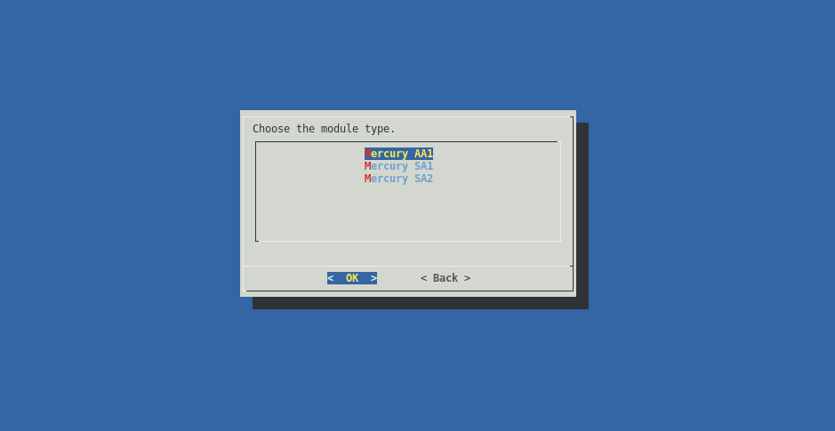
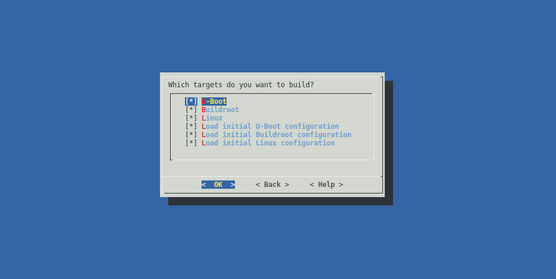
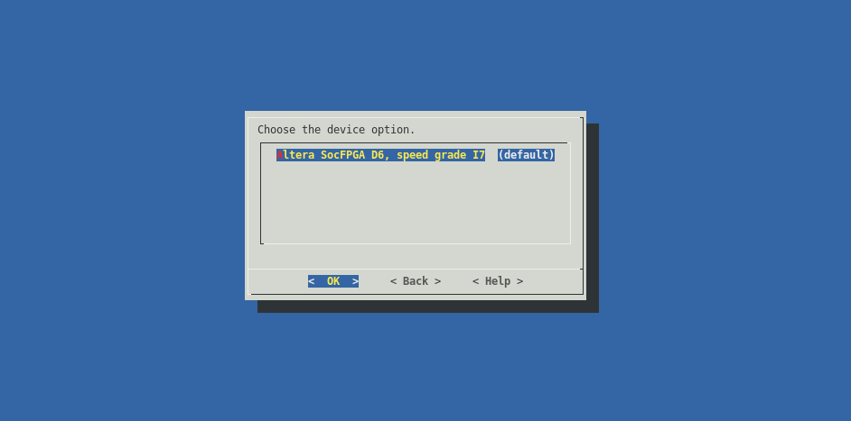
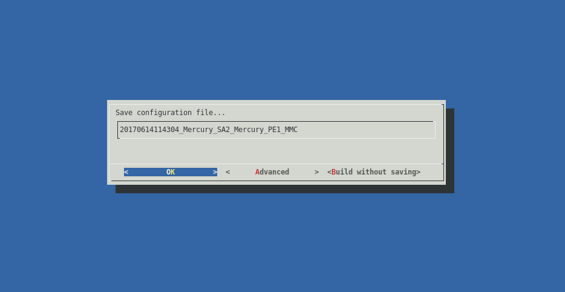

Enclustra Build Environment - User Documentation¶
Introduction¶
This is the user documentation for the Enclustra Build Environment project.
Version Information¶
| Date | Rev | Author | Changes |
|---|---|---|---|
| 2015-05-08 | 0.1.0 | Karol Gugala | Buildsystem description |
| 2015-05-11 | 0.1.1 | Aleksandra Szawara | Language check |
| 2015-07-06 | 0.1.2 | Aurelio Lucchesi | Minor corrections |
| 2015-11-20 | 0.1.3 | Tomasz Gorochowik | Major reorganization |
| 2016-06-21 | 0.1.4 | Tomasz Gorochowik | Project mode section |
| 2017-06-23 | 0.1.5 | Maciej Mikunda | Updates for release v1.5 |
| 2018-03-21 | 0.1.6 | Mariusz Glebocki | Updates for release v1.6 |
Build Environment¶
This chapter describes the usage of the build environment.
The whole build environment is written in Python.
Its internal functionality is determined by ini files placed in a specific directory layout.
Prerequisites¶
To run the build script a Python interpreter is required. The system is compatible with both, Python 2 and Python 3.
The build environment requires additional software to be installed as listed below:
| tool | minimal version | comments |
|---|---|---|
| dialog | 1.2-20130928 | Required only in the GUI mode |
| make | 3.81.8 | |
| git | 1.9.1 | |
| mercurial | 2.8.2 | |
| tar | 1.27.1 | |
| unzip | 6.0 | |
| curl | 7.35.0 | |
| wget | 1.15 | |
| bc | 1.06.95 | |
| libssl-dev | 1.0.0 | |
| patch | 2.7.1 | |
| rsync | 3.1.0 | |
| autoconf | 2.69 | Required to build a buildroot rootfs |
| g++ | 4.8.3 | Required to build a buildroot rootfs |
| gcc | 4.8.3 | Required to build the Linux kernel, U-Boot and a buildroot rootfs |
For more information on how to install the required packages in the supported systems, please refer to the corresponding subsection (OpenSUSE 42.3, Ubuntu 14.04 LTS).
OpenSUSE 42.3¶
su -
zypper -n install -yt pattern devel_basis
zypper -n install -y autoconf bc curl gcc-c++ git glibc-32bit \
mercurial python-dialog unzip wget
Ubuntu 14.04 LTS¶
sudo apt update
sudo apt install -y autoconf bc build-essential curl git mercurial \
libc6-i386 python python-dialog unzip wget
Directory Structure¶
The build environment is designed to work with a specific directory structure depicted below:
|-- bin
|-- binaries
|-- buildscripts
|-- sources
| |-- target_submodule_1
| |-- target_submodule_2
| |-- target_submodule_3
| |-- target_submodule_4
|-- targets
| |-- Module_1
| |-- BaseBoard_1
| |-- BaseBoard_2
| |-- Module_2
| |-- BaseBoard_1
|-- target_output
| Folder | function |
|---|---|
| bin | Remote toolchains installation folder. |
| binaries | Additional target binaries download folder. |
| sources | master_git_repository clone folder. It contains submodule folders. |
| buildscripts | Build system executable files. |
| targets | Target configurations are placed here. |
| target_output | Folders generated during the build process, that contain the output files after a successful build of every specifc target. |
Important
By default, the target output folders are named according to this folder naming scheme:
out_<timestamp>_<module>_<board>_<bootmode>.
The default name can be overwriten during the build process.
Repositories Structure¶
The sources directory is the master git repository with a number of submodules pointing to actual code repositories.
During the fetch phase, the build environment synchronizes only the submodules required to build the selected targets.
.
|-- container_git_repository
| |-- target_submodule_1
| |-- target_submodule_2
| |-- target_submodule_3
General Build Environment Configuration¶
Environment settings are stored in the enclustra.ini file in the main directory of the build environment.
Before starting the build script, one may need to adjust the general settings of the build environment by editing this file.
One of the most crucial setting is the number of build threads used in a parallel.
This parameter is set in the [general] section by changing the nthreads key.
Additionally, parameters in the [debug] section allow the user to adjust the logging settings:
- If the
debug-callsoption if set totrue, the output of all external tool calls (such asmake,taretc.) will be displayed in the terminal. - If the
quiet-modeoption is set totrue, the build log of the targets will not be printed to the terminal, only informations about actual build state will be shown. This option does not affect thebuild-logfileoption. - If the
build-logfileoption is set to a file name, the build environment will write the whole build log output to that file. If the option is not set, the output will not be logged. - If the
break-on-erroroption is set totrue, the build environment will interrupted on the first error. Otherwise the build environment will only print an error message and continue to work on a next available target.
Supported Devices¶
| Family | Module | Base board | Available targets |
|---|---|---|---|
| Altera | Mars MA3 | Mars EB1 | Linux, U-Boot, Buildroot |
| Altera | Mars MA3 | Mars PM3 | Linux, U-Boot, Buildroot |
| Altera | Mercury SA1 | Mercury PE1 | Linux, U-Boot, Buildroot |
| Altera | Mercury+ SA2 | Mercury PE1 | Linux, U-Boot, Buildroot |
| Altera | Mercury+ AA1 | Mercury PE1 | Linux, Buildroot |
Note
For Mercury+ AA1, U-Boot is delivered as a precompiled binary. It is generated using the Intel/Altera SoCEDS tool. The AA1 module support is added using custom patches.
Usage¶
GUI¶
Note
By default the build script will fetch and build the latest EBE release. To use a specific release you need to clone a clean copy of the EBE repo and switch to a selected release:
git clone https://github.com/enclustra-bsp/bsp-altera.git -b v1.x
# where v1.x is the release number (e.g. v1.5)
In order to use the latest code, switch to develop release:
git clone https://github.com/enclustra-bsp/bsp-altera.git -b develop
export EBE_RELEASE=master
Note
Since software in the develop release uses code which is currently under development the resulting software may be unstable.
In order to build the software for a chosen board using the GUI, please follow these steps:
- Clone the build environment repository with:
git clone https://github.com/enclustra-bsp/bsp-altera.git
- Change to the bsp-altera directory:
cd bsp-altera
Run
./build.shscript.The welcome screen provides basic information about the version of the build environment.

Choose the configuration.
Choose the module type.
Choose the base board type.
Choose the boot device.
Choose which targets available for the chosen device family will be fetched. On the bottom of the screen a short description of the highlighted target is displayed. Choosing certain targets may disable fetching others.

Choose which targets will be built. On the bottom of the screen a short description of a highlighted target is displayed. Choosing certain targets may disable building others. In order to use the default target configuration enable the
Load initial ... configurationcheckbox. If changes have been made to the target, disable this checkbox, so that the changes are not overwritten during the build process.Choose the exact version of the device (chip type, industrial/commercial grade, speed grade).
Customize binaries or use the default ones.
Verify all the chosen build parameters.
Choose whether or not to save the configuration for later use.
The build environment will fetch and build the chosen targets.
Command Line¶
The build process can be invoked from the command line. All options that are available in the GUI are present on the command line interface as well. A list of the available command line options can be obtained like this:
./build.sh --help
usage: tool [-h] [--release ver] [-L] [--list-devices-raw] [-d device] [-l]
[--list-targets-raw] [-x target] [-f target] [-b target]
[--custom-build target steps] [--fetch-history target]
[--list-dev-options] [--list-dev-binaries] [-B file path]
[--anti-unicorn] [--expert-mode] [-o index] [--generate-project]
[--build-project project_file] [--build-project-auto project_file]
[-s cfg] [-c] [-C] [-v]
Enclustra Build Environment
optional arguments:
-h, --help show this help message and exit
--release ver specify release version of the buidscripts
-L, --list-devices list all available devices
--list-devices-raw list all available devices in a script
friendly way
-d device, --device device specify device as follows:
<family>/<module>/<base_board>/<boot_device>
-l, --list-targets list all targets for chosen device
--list-targets-raw list all targets for chosen device in a script
friendly way
-x target fetch and build specific target
-f target, --fetch target fetch specific target
-b target, --build target build specific target
--custom-build target steps build specific target with specific steps
(comma separated)
--fetch-history target fetch specific target with history
--list-dev-options list all available device options for chosen
device
--list-dev-binaries list all available binary files for chosen
device
-B file path, --custom-binary file path
exchange selected binary file with the one
pointed by the path
--anti-unicorn disables colored output
--expert-mode expert mode: prepare the environment for
building the whole system manually
-o index, --dev-option index set device option by index, the default one
will be used if not specified
--generate-project generate project directory instead of a
regular output
--build-project project_file build project
--build-project-auto project_file
build project automatically, skip the gui
-s cfg, --saved-config cfg use previously saved configuration file
-c, --clean-all delete all downloaded code, binaries, tools
and built files
-C, --clean-soft run clean commands for all specified targets
(if available)
-v, --version print version
In order to list all available devices use the following command:
./build.sh -L
If the build.sh script is invoked with the -d option, the build environment switches to console mode.
This mode requires a valid device specifier in order to locate the device configuration within the targets directory for the specific device, e.g. for the Mercury SA1 module on the Mercury PE1 base board in QSPI boot mode, the command would look like this:
./build.sh -d Mercury_SA1/Mercury_PE1/QSPI
Such a command will fetch and build all the default targets for a selected device.
To list all the available targets for a selected device, the user needs to add the -l switch to the command, e.g.:
./build.sh -d Mercury_SA1/Mercury_PE1/QSPI -l
The -x option will fetch and build only the selected target, e.g.:
./build.sh -d Mercury_SA1/Mercury_PE1/QSPI -x Linux
That will fetch and build only the Linux target for the selected device.
To only fetch or build a specific target, the user can specify those targets with the -f (fetch) and -b (build) options. It is possible to choose multiple targets, e.g. like this:
./build.sh -d Mercury_SA1/Mercury_PE1/QSPI -f Linux -b Buildroot -x U-Boot
This will fetch Linux, build Buildroot and fetch/build U-Boot.
The --list-dev-options option will list all the available device options for the chosen device. It can be used like this:
./build.sh -d Mercury_SA1/Mercury_PE1/QSPI -x Linux --list-dev-options
This will print out an indexed list of device options.
The -o option allows the user to choose a device option for the selected device by providing the index of a specific device option, like this:
./build.sh -d Mercury_SA1/Mercury_PE1/QSPI -x Linux -o 1
If no device option is selected, the default one will be used.
To reset the build environment and delete all downloaded code, binaries, tools and built files, the --clean option can be used:
./build.sh --clean
Deployment¶
This chapter describes how to prepare the hardware to boot from different boot media, using the binaries generated from the build environment.
All the guides in this section require the user to build the required files for the chosen device, with the build environment, as described in the previous section. Once the files are built, they can be deployed to the hardware as described in the following sub sections.
Note
Default target output directories are named according to the following directory naming scheme:
out_<timestamp>_<module>_<board>_<bootmode>.
As a general note on U-Boot used in all the following guides: U-Boot is using variables from the default environment. Moreover, the boot scripts used by U-Boot also rely on those variables. If the environment was changed and saved earlier, U-Boot will always use these saved environment variables on a fresh boot, even after changing the U-Boot environment.
| Altera chip | Boot storage | Environment storage | Offset | Size |
|---|---|---|---|---|
| Arria 10 | MMC/eMMC | MMC/eMMC | 0x200 (1 block) | 0x1000 (8 blocks) |
| Arria 10 | QSPI | QSPI | 0xD00000 | 0x1000 |
| Cyclone V | All | QSPI | 0x800000 | 0x40000 |
To restore the default environment, run the following command in the U-Boot command line:
env default -a
This will not overwrite the stored environment but will only restore the default one in the current run.
To permanently restore the default environment, the saveenv command has to be invoked.
Note
A *** Warning - bad CRC, using default environment warning message that appears when booting into U-Boot indicates that the default environment will be loaded.
SD Card (MMC)¶
In order to deploy images to an SD Card and boot from it, perform the following steps as root:
Prepare the SD Card (refer to the SD Card (MMC) Partitioning Guide).
Record the preloader/bootloader image to the unformatted partition of a SD Card (type a2):
sudo dd if=preloader-mkpimage.bin of=/dev/sdX2 sync # where X is the letter of the device
Mount the BOOT and rootfs partitions.
Copy
uImage,devicetree.dtb,fpga.rbf,u-boot.imganduboot.scr(oruboot_ramdisk.scrfile when using RAMDISK, which must be renamed touboot.scr) from the build environment output directory to the BOOT partition (FAT formatted). Copyuramdiskto the same partition (only when using RAMDISK).Note
u-boot.imgis only required for Cyclone V modules.Extract the
rootfs.tararchive from the build environment output directory onto the second partition (rootfs, ext2 formatted).sudo tar -xpf rootfs.tar -C /path/to/mmc/mountpoint
Unmount all partitions mounted from the SD Card.
Insert the card into the SD Card slot on the board.
Configure the board to boot from the SD Card (refer to the board User Manual).
Power on the board.
The board should boot the Linux system.
If one wants to manually trigger booting from a SD Card, the following command has to be invoked from the U-Boot command line:
run mmcboot
eMMC Flash¶
Note
This section is valid only for the Mars MA3 and Mercury AA1 modules.
On both Mars MA3 and Mercury AA1 module the MMC bus lines are shared between eMMC flash and SD card. It may be necessary to switch the pinmux between them during the flashing procedure. More information on memory pinmux switching can be found in section Storage pinmux switching. In order to deploy images to eMMC flash and boot from it, perform the following steps:
Setup a TFTP server on the host computer.
Prepare the SD card as usual for ramdisk boot (refer to the SD Card (MMC) section)
On the host machine, copy
uImage,devicetree.dtb,uboot.scr(oruboot_ramdisk.scrfile when using RAMDISK, which must be renamed touboot.scr) ,rootfs.tar(oruramdiskwhen using RAMDISK),fpga.rbf,preloader-mkpimage.binandu-boot.img(only for the Mars MA3 module) from the EMMC build output directory to the TFTP server directory.Connect an Ethernet cable to the device.
Connect a serial console to the device (e.g. using PuTTY or picocom).
Power the board on and boot to U-Boot from an SD Card.
Stop the U-Boot autoboot and manually boot to the Linux system:
This step depends on the chosen module.
For Mars MA3:
setenv sd_target emmc run mmcboot
For Mercury AA1:
setenv linux_storage EMMC setenv use_ramdisk 1 run bootcmdFormat the eMMC card.
Run
fdisktool:fdisk /dev/mmcblk0
Within
fdiskrun the following commands:# delete the partition table o # create a new partition n # choose primary p # set number to 2 2 # leave default start sector # set the size to 2 MiB +2M # change the partition type t # set type to Altera Boot Partition a2 # create a new partition n p 1 # leave default start sector # set the size to 200 MiB +200M # set the 1st partition type to FAT32 t 1 c # create a new partition n p 3 # leave default start and end sector # set the 3rd partition type to Linux t 3 83 # write changes and exit w q
Format the 1st and 3rd partitions:
mkfs.fat -n BOOT /dev/mmcblk0p1 mkfs.ext2 -L rootfs /dev/mmcblk0p3
Set the TFTP server IP address:
export TFTP_IP='xxx.xxx.xxx.xxx' # where xxx.xxx.xxx.xxx is the TFTP server address
Update the preloader/bootloader image:
tftp -g -r preloader-mkpimage.bin -l preloader-mkpimage.bin $TFTP_IP dd if=preloader-mkpimage.bin of=/dev/mmcblk0p2
Update the boot files:
mount /dev/mmcblk0p1 /mnt tftp -g -r uImage -l /mnt/uImage $TFTP_IP tftp -g -r devicetree.dtb -l /mnt/devicetree.dtb $TFTP_IP tftp -g -r uboot.scr -l /mnt/uboot.scr $TFTP_IP tftp -g -r fpga.rbf -l /mnt/fpga.rbf $TFTP_IP # only for Mars MA3: tftp -g -r u-boot.img -l /mnt/u-boot.img $TFTP_IP # when using RAMDISK rootfs: tftp -g -r uramdisk -l /mnt/uramdisk $TFTP_IP sync && umount /mnt
Update the rootfs:
Note
This step is required only when using persistent rootfs.
mount /dev/mmcblk0p3 /mnt tftp -g -r rootfs.tar -l rootfs.tar $TFTP_IP tar -xpf rootfs.tar -C /mnt sync && umount /mnt
Configure the board to boot from the eMMC flash (refer to the board User Manual).
Reset the board.
The board should boot the Linux system.
QSPI Flash¶
The QSPI flash is divided into partitions based on the module’s family. The partition offsets are hard coded in the U-Boot code and should not be modified. For more detailed information on partition offsets and sizes, please refer to QSPI Flash Layouts.
There are two ways of flashing the QSPI flash memory - deploy each system part step by step or use the generated QSPI flash image. The first few steps are the same for both options. In order to prepare the flashing environment, perform the following steps:
Setup an TFTP server on the host computer.
Power on the board and boot to U-Boot (e.g. from a MMC card).
Connect an Ethernet cable to the device.
Connect a serial console to the device (e.g. using PuTTY or picocom).
Setup the U-Boot connection parameters:
setenv ipaddr 'xxx.xxx.xxx.xxx' # where xxx.xxx.xxx.xxx is the board address setenv serverip 'yyy.yyy.yyy.yyy' # where yyy.yyy.yyy.yyy is the server (host computer) address
Then, depending on the choice, follow the procedure described in the Flashing the QSPI step by step or the Flashing the QSPI using the full image subsection.
Flashing the QSPI step by step¶
Copy
uImage,devicetree.dtb,uboot.scr(oruboot_ramdisk.scrfile when using RAMDISK, which must be renamed touboot.scr) androotfs.jffs2(oruramdiskwhen using RAMDISK),u-boot.img(only for the Cyclone V based modules),fpga.rbf.imgandpreloader-mkpimage.binfrom the build environment output directory to the TFTP server directory.Set the memory pinmux to QSPI flash:
Note
This step is required only for the Arria 10 based modules.
altera_set_storage QSPI
Before accessing the QSPI Flash for the first time, the flash device must be enumerated:
sf probe
Update the preloader/bootloader image:
mw.b ${preloader_loadaddr} 0xFF ${preloader_size} tftpboot ${preloader_loadaddr} ${preloader_image} sf erase ${qspi_preloader_offset} ${preloader_size} sf write ${preloader_loadaddr} ${qspi_preloader_offset} ${filesize}
Update the U-Boot image:
Note
This step is required only for the Cyclone V based modules.
mw.b ${uboot_loadaddr} 0xFF ${qspi_uboot_erase_size} tftpboot ${uboot_loadaddr} ${uboot_image} sf erase ${qspi_uboot_erase_offset} ${qspi_uboot_erase_size} sf write ${uboot_loadaddr} ${qspi_uboot_offset} ${filesize}
Update the bitstream image:
mw.b ${bitstream_loadaddr} 0xFF ${bitstream_size} tftpboot ${bitstream_loadaddr} ${bitstream_image} sf erase ${qspi_bitstream_offset} ${bitstream_size} sf write ${bitstream_loadaddr} ${qspi_bitstream_offset} ${filesize}
Update the boot script image:
mw.b ${bootscript_loadaddr} 0xFF ${bootscript_size} tftpboot ${bootscript_loadaddr} ${bootscript_image} sf erase ${qspi_bootscript_offset} ${bootscript_size} sf write ${bootscript_loadaddr} ${qspi_bootscript_offset} ${filesize}
Update the Linux kernel:
mw.b ${kernel_loadaddr} 0xFF ${kernel_size} tftpboot ${kernel_loadaddr} ${kernel_image} sf erase ${qspi_kernel_offset} ${kernel_size} sf write ${kernel_loadaddr} ${qspi_kernel_offset} ${filesize}
Update the devicetree image:
mw.b ${devicetree_loadaddr} 0xFF ${devicetree_size} tftpboot ${devicetree_loadaddr} ${devicetree_image} sf erase ${qspi_devicetree_offset} ${devicetree_size} sf write ${devicetree_loadaddr} ${qspi_devicetree_offset} ${filesize}
Update the rootfs image:
This step depends on the chosen boot device.
If QSPI RAMDISK was selected:
mw.b ${ramdisk_loadaddr} 0xFF ${ramdisk_size} tftpboot ${ramdisk_loadaddr} ${uramdisk_image} sf erase ${qspi_ramdisk_offset} ${ramdisk_size} sf write ${ramdisk_loadaddr} ${qspi_ramdisk_offset} ${filesize}
If QSPI was selected:
mw.b ${rootfs_loadaddr} 0xFF ${rootfs_size} tftpboot ${rootfs_loadaddr} ${rootfs_image} sf erase ${qspi_rootfs_offset} ${rootfs_size} sf write ${rootfs_loadaddr} ${qspi_rootfs_offset} ${filesize}
Configure the board to boot from the QSPI flash (refer to the board User Manual).
Reset the board.
The board should boot the Linux system.
If you want to manually trigger booting from the QSPI flash, the following command has to be invoked from the U-Boot command line:
run qspiboot
Note
Note that the steps from 4 to 10 can be invoked independently.
Flashing the QSPI using the full image¶
Copy the
boot_full.bin(orboot_full_ramdisk.binwhen using RAMDISK, which must be renamed toboot_full.bin) file from the build environment output directory to the TFTP server directory.Set the memory pinmux to QSPI flash:
Note
This step is required only for the Arria 10 based modules.
altera_set_storage QSPI
Flash the QSPI memory:
mw.b ${preloader_loadaddr} 0xFF 0x4000000 tftpboot ${preloader_loadaddr} boot_full.bin sf probe sf erase 0x0 0x4000000 sf write ${preloader_loadaddr} 0x0 ${filesize}
Configure the board to boot from the QSPI flash (refer to the board User Manual).
Reset the board.
The board should boot the Linux system.
If you want to manually trigger booting from the QSPI flash, the following command has to be invoked from the U-Boot command line:
run qspiboot
USB Drive¶
Note
USB boot is supported only on Cyclone V modules.
The Altera family devices cannot boot directly from a USB device. The preloader and the U-Boot have to be started from a SD Card (MMC) or QSPI flash. Please refer to SD Card (MMC) or eMMC Flash to boot the U-Boot from MMC or QSPI. When the U-Boot is booted it can load and boot the Linux system stored on the USB drive.
In order to deploy images and boot the Linux system from a USB drive, perform the following steps:
Create a FAT formatted partition as the first partition on the drive. This partition should have at least 16 MiB.
Create a ext2 formatted partition as the second partition on the drive. This partition should have at least 16 MiB.
Copy
uImage,devicetree.dtbanduboot.scrfrom the build environment output directory to the FAT formatted partition.Unpack root file system onto the ext2 partition of the USB drive. This has to be done as root.
sudo tar -xpf rootfs.tar -C /path/to/mmc/mountpoint
Insert the USB drive into the USB port of the board.
Configure the board to boot from the MMC card or QSPI flash (refer to the board User Manual).
Power on the board.
Stop the U-Boot autoboot.
Trigger USB boot with
run usbboot
NFS¶
Note
NFS boot is supported only on Cyclone V modules.
The preloader and the U-Boot have to be started from a SD Card (MMC), with the images generated by the build environment. When U-Boot is booted it can load and boot the Linux system from the host machine via Ethernet. Please refer to NFS Preparation Guide to prepare your system for NFS boot.
In order to deploy images and boot the Linux system over NFS, perform the following steps as root:
Prepare the SD Card (refer to the SD Card (MMC) Partitioning Guide).
Record the preloader image to the unformatted partition of a SD Card (type a2):
sudo dd if=preloader-mkpimage.bin of=/dev/sdX2 sync # where X is the letter of the device
Copy
fpga.rbf,u-boot.imganduboot.scrfrom the build environment output directory to the BOOT partition.Copy
uImage,devicetree.dtbanduboot.scrfrom the build environment output directory to the TFTP folder.Extract the
rootfs.tararchive from the build environment output directory into the NFS folder.sudo tar -xpf rootfs.tar -C /path/to/NFS
Insert the card into the SD Card slot on the board.
Configure the board to boot from the SD Card (MMC).
Power on the board and stop the U-Boot autoboot.
Set the server’s and target’s IP address, and the path to the rootfs NFS folder.
env default -a setenv ipaddr 192.168.1.10 setenv serverip 192.168.1.2 setenv serverpath /path/to/NFS saveenv
Trigger NFS boot with:
run netboot
Note
Saving the U-Boot environment like above ensures that NFS boot will work automatically after reboot.
SD Card (MMC) Partitioning Guide¶
Insert the SD Card into the card reader of the host computer.
If the partitions were mounted - unmount them:
sudo umount /path/to/mountpoint
Run
fdisktool:sudo fdisk /dev/sdX # where X is the letter of the SD cardWithin
fdiskrun the following commands:# create a new partition table o # create a new primary partition n # choose primary p # set number to '2' 2 # leave default start sector # set the size to 2 MiB +2M # change the partition type t # choose the second partition (may be chosen automatically if only one exists) 2 # set type to Altera Boot Partition a2 # create a new primary partition n # set as primary p # set number to '1' 1 # leave default start sector # set the size to 200MiB +200M # change the partition type t # choose the first partition 1 # set type to W95 FAT32 (LBA) c # create the third partition n # set as primary p # set number to '3' 3 # leave default start sector # leave default end sector # write changes to the disk w # leave 'fdisk' (might be happening automatically) q
Format newly created partitions:
sudo mkfs.fat -n BOOT /dev/sdX1 sudo mkfs.ext2 -L rootfs /dev/sdX3 # where X is the letter of the SD card
NFS Preparation Guide¶
For development, it can be very handy to mount the root filesystem via NFS (nfsroot).
To prepare the host machine several preparatory steps are required.
The following servers need to be installed on the host machine, and configured properly:
- NFS server (e.g. on Ubuntu
nfs-kernel-server) - TFTP server (e.g. on Ubuntu
tftpd) - DHCP server (e.g. on Ubuntu
isc-dhcp-server)
For demonstration purpose, the TFTP folder on the host is /tftpboot. It can be configured like this:
$ sudo mkdir /tftpboot
$ sudo chown nobody /tftpboot
$ nano /etc/xinetd.d/tftp
$ cat /etc/xinetd.d/tftp
service tftp
{
protocol = udp
port = 69
socket_type = dgram
wait = yes
user = nobody
server = /usr/sbin/in.tftpd
server_args = /tftpboot
disable = no
}
$ sudo /etc/init.d/xinetd restart
For demonstration purpose, the NFS export folder is /nfs_exp. In can be configured like this:
$ sudo mkdir /nfs_exp
$ sudo chown root:root /nfs_exp
$ sudo chmod 777 /nfs_exp
$ sudo nano /etc/exports
$ cat /etc/exports
/nfs_exp 192.168.1.0/24(fsid=0,rw,no_subtree_check,no_root_squash)
$ sudo exportfs -a
Sometimes it is also necessary to restart the NFS server:
$ sudo /etc/init.d/nfs-kernel-server restart
To configure the DHCP server do this:
$ cat /etc/dhcp/dhcpd.conf
default-lease-time 600;
max-lease-time 7200;
option subnet-mask 255.255.255.0;
option broadcast-address 192.168.1.255;
option domain-name-servers 192.168.1.1, 192.168.1.2;
subnet 192.168.1.0 netmask 255.255.255.0 {
range 192.168.1.10 192.168.1.255;
}
$ sudo /etc/init.d/isc-dhcp-server restart
To select your ethernet interface edit /etc/default/isc-dhcp-server:
$ sudo sed -i -r 's/INTERFACES="(.+)"/INTERFACES="eth1"/g' /etc/default/isc-dhcp-server
sudo /etc/init.d/isc-dhcp-server restart
On the target in the Linux console, the NFS folder from the host should now accessible like this
# mkdir /nfs
# mount -t nfs -o port=2049,nolock,proto=tcp,ro,vers=3 <server_ip>:/nfs_exp /nfs
# cd /nfs
Note
Note that currently our Linux only supports NFS version 3, not 4. So the target folder needs to be specified, and the version is 3 (vers=3).
Note
Take care to properly handle the permissions on the server. They should match those used on the client.
After configuring your system, you can now deploy the new boot images to your TFTP folder, and extract the rootfs TAR archive to your NFS folder.
QSPI Flash Layouts¶
The QSPI flash layout depends on the version of the Altera chip that is present in the module.
| Partition | Filename | Offset | Size |
|---|---|---|---|
| Preloader | preloader-mkpimage.bin | 0x0 | 0x40000 |
| U-Boot image | u-boot.img | 0x60000 | 0x60000 |
| FPGA Bitstream | fpga.rbf.img | 0x100000 | 0x700000 |
| U-Boot environment | 0x800000 | 0x40000 | |
| Linux Device Tree | devicetree.dtb | 0x840000 | 0x40000 |
| Bootscript | uboot.scr/uboot_ramdisk.scr | 0x880000 | 0x40000 |
| Linux kernel | uImage | 0x8C0000 | 0x740000 |
| JFFS2 Rootfs | rootfs.jffs2/uramdisk | 0x1000000 | 0x3000000 |
| Partition | Filename | Offset | Size |
|---|---|---|---|
| Bootloader/U-Boot image | preloader-mkpimage.bin | 0x0 | 0x100000 |
| FPGA Bitstream | fpga.rbf.img | 0x100000 | 0xc00000 |
| U-Boot environment | 0xd00000 | 0x40000 | |
| Linux Device Tree | devicetree.dtb | 0xd40000 | 0x40000 |
| Bootscript | uboot.scr/uboot_ramdisk.scr | 0xd80000 | 0x40000 |
| Linux kernel | uImage | 0xdc0000 | 0x580000 |
| JFFS2 Rootfs | rootfs.jffs2/uramdisk | 0x1340000 | 0x2cc0000 |
Storage pinmux switching¶
Some of the modules have various storage interfaces sharing the same processor pins. The default storage pinmux depends on the selected boot target. To allow the user to manually switch between them, additional U-Boot commands have been implemented. As the commands may differ between modules, more detailed information can be found in the subsections below.
Storage pinmux on Mercury AA1¶
The SD Card, eMMC and QSPI controllers share common pins and only one of them can be used at a time.
It’s possible to switch between them using the altera_set_storage U-Boot command with one of three parameters:
MMCEMMCQSPI
Note
The storage change is temporary. It will reset to boot storage after reboot. Also, it does not change the storage available in Linux (see next section).
Examples:
# Switch to SD card
=> altera_set_storage MMC
=> mmc rescan
=> mmc info
Device: SOCFPGA DWMMC
Manufacturer ID: 3
OEM: 5344
Name: SL08G
Tran Speed: 50000000
Rd Block Len: 512
SD version 3.0
High Capacity: Yes
Capacity: 7.4 GiB
Bus Width: 4-bit
# Switch to eMMC
=> altera_set_storage EMMC
=> mmc rescan
=> mmc info
Device: SOCFPGA DWMMC
Manufacturer ID: 70
OEM: 100
Name: W5251
Tran Speed: 52000000
Rd Block Len: 512
MMC version 5.0
High Capacity: Yes
Capacity: 14.3 GiB
Bus Width: 8-bit
# Switch to QSPI
=> altera_set_storage QSPI
=> mmc rescan
dwmci_send_cmd: Timeout on data busy
dwmci_send_cmd: Timeout on data busy
dwmci_send_cmd: Timeout on data busy
dwmci_send_cmd: Timeout on data busy
Card did not respond to voltage select!
=> sf probe
SF: Read data capture delay calibrated to 6 (0 - 12)
SF: Detected S25FL512S_256K with page size 512 Bytes, erase size 256 KiB, total 64 MiB
Selecting storage used by Linux¶
The storage selection when booting Linux is automated. There are two Linux storage-related U-Boot’s environment variables:
linux_storage- decides which storage will be available in Linux. Possible values are the same as in thealtera_set_storagecommand (MMC,EMMC,QSPI). By default boot storage is used.use_ramdisk- when set to0, Linux will boot with rootfs located in the storage chosen withlinux_storage. When set to1, ramdisk located in the boot partition of the boot storage will be used. Default value depends on the.scrfile used - it is1foruboot_ramdisk.scrand0foruboot.scr.
Examples:
# Boot storage is assumed to be SD card (MMC)
=> setenv linux_storage QSPI
=> run bootcmd
FPGA BRIDGES: enable
Booting on SD card...
1478 bytes read in 3 ms (480.5 KiB/s)
## Executing script at 00100000
4068096 bytes read in 364 ms (10.7 MiB/s)
16185 bytes read in 8 ms (1.9 MiB/s)
Switching storage to QSPI
Booting with rootfs
(...Linux with QSPI rootfs boots...)
=> setenv linux_storage EMMC
=> setenv use_ramdisk 1
=> run bootcmd
FPGA BRIDGES: enable
Booting on SD card...
1478 bytes read in 3 ms (480.5 KiB/s)
## Executing script at 00100000
4068096 bytes read in 364 ms (10.7 MiB/s)
16185 bytes read in 8 ms (1.9 MiB/s)
17657259 bytes read in 1558 ms (10.8 MiB/s)
Switching storage to EMMC
Booting with ramdisk
(...Linux with ramdisk from SD card and access to eMMC storage boots...)
Saving the Linux storage selection - eMMC and SD card¶
The variables, when changed in U-Boot, are reset after reboot.
To make them permanent, create uEnv.txt file on the boot partition located on the boot storage and put the variables in it, e.g.:
linux_storage=QSPI
use_ramdisk=0
Keep in mind, the file will not be editable on Linux when you set a different storage than the boot one.
In this case you can set the variable in U-Boot manually to your boot storage, boot the system and change uEnv.txt:
# Boot storage assumed to be SD card (MMC) and linux_storage set to EMMC
=> setenv linux_storage MMC
=> run bootcmd
(...Linux boots...)
buildroot login: root
Password:
# mkdir /boot
# mount /dev/mmcblk0p1 /boot
# nano /boot/uEnv.txt
Saving the Linux storage selection - QSPI¶
When using the QSPI storage, you can save your choice in U-Boot using the saveenv command:
=> setenv linux_storage MMC
=> setenv use_ramdisk 1
=> saveenv
When Linux is using QSPI storage and you used saveenv in U-Boot at least once before, you can use the fw_setenv command in Linux. This works the same way as in U-Boot:
# fw_setenv linux_storage MMC
# fw_setenv use_ramdisk 1
Memory pinmux on Mars MA3¶
On Mars MA3 the eMMC flash and SD Card controllers have common bus lines. Depending on the boot mode, one of them is enabled when the other is put into reset. The eMMC flash interface can be enabled by calling:
run altera_enable_emmc
The SD Card interface can be enabled with the following command:
run altera_enable_mmc
Additionally, a more complex altera_mux_sd_memory function has been added to the U-Boot environment.
It enables the SD interface based on the sd_target U-Boot environment variable (possible values are mmc and emmc) and sets proper bus width (4 bit for SD/MMC Card and 8 bit for eMMC flash) in the dwmmc node in the Linux devicetree.
Note
As altera_mux_sd_memory modifies the Linux devicetree, it requires the devicetree to be loaded earlier.
E.g. to enable eMMC, call:
setenv sd_target emmc
run altera_mux_sd_memory
For an example see: eMMC Flash (Note that altera_mux_sd_memory is called in boot script.)
Project mode¶
For users who want to use the Enclustra Build Environment, but still be able to modify the parts of the system, a ‘project mode’ is available.
Project mode is similar to regular mode, but enables user to fully customize all the parts of the system.
To enable project mode, choose “Advanced” option on the very last screen of the GUI workflow.

Check the ‘enable’ option on.
Continue as usual.
After the regular build has finished, the sources of the components that were chosen to be fetched, are going to be copied to the output directory. User is free to modify those sources and add a git upstream to them to keep them versioned.
Besides the sources, a new build script called build.sh is generated. This script will run the Enclustra Build Environment in a special project mode. In this mode the step for choosing components to fetch is skipped, and the user is prompted to choose which of the components to build. If any of the components of the system were modified, the Build system will build them, and include the output files in the final boot images.
Updating the binaries¶
Changes in the FPGA design
If you want to modify the FPGA design, you can update the binaries in two ways:
By changing the path to custom binaries when you are choosing the device option in the Enclustra Build Environment.
By copying to the target device:
- the new *.rbf file (if you introduced changes to the FPGA logic),
- the new *.bin file (if you introduced changes to the hard processing system (HPS) of the FPGA SoC, e.g. in the clock configuration).
Please note that the *.rbf file should be named ‘fpga.rbf’ and the *.bin file ‘preloader-mkpimage.bin’. Pay attention to choosing the correct partition to replace the files if you use an SD Card (please refer to SD Card (MMC)).
Changes in U-boot, Linux or Buildroot
If you want to modify U-boot, Linux or Buildroot, perform the following steps:
Go to the ‘sources/’ directory, where U-boot, Linux and Buildroot repositories are placed.
Introduce your changes in the selected repository
Run the Enclustra Build Environment in the project mode to compile and build the modified sources.
Replace the files on the target device, depending on which repository you changed:
- altera-linux: the ‘devicetree.dtb’ and ‘uImage’ files.
- altera-uboot: the ‘uboot.scr’ and ‘uboot.img’ files (only for Cyclone V modules).
- buildroot-rootfs: the ‘rootfs.tar’ archive (or the ‘rootfs.jffs2’ or ‘uramdisk’, depending on which the target device you choose).
FAQ¶
How to script U-Boot?¶
All U-Boot commands can be automated by scripting, so that it is much more convenient to deploy flash images to the hardware.
For example, QSPI deployment:
Put the following commands as plain text to a file cmd.txt:
sf probe
echo "preloader"
mw.b ${preloader_loadaddr} 0xFF ${preloader_size}
tftpboot ${preloader_loadaddr} ${preloader_image}
sf erase ${qspi_preloader_offset} ${preloader_size}
sf write ${preloader_loadaddr} ${qspi_preloader_offset} ${filesize}
echo "U-Boot"
mw.b ${uboot_loadaddr} 0xFF ${qspi_uboot_erase_size}
tftpboot ${uboot_loadaddr} ${uboot_image}
sf erase ${qspi_uboot_erase_offset} ${qspi_uboot_erase_size}
sf write ${uboot_loadaddr} ${qspi_uboot_offset} ${filesize}
echo "FPGA bitstream"
mw.b ${bitstream_loadaddr} 0xFF ${bitstream_size}
tftpboot ${bitstream_loadaddr} ${bitstream_image}
sf erase ${qspi_bitstream_offset} ${bitstream_size}
sf write ${bitstream_loadaddr} ${qspi_bitstream_offset} ${filesize}
echo "boot script"
mw.b ${bootscript_loadaddr} 0xFF ${bootscript_size}
tftpboot ${bootscript_loadaddr} ${bootscript_image}
sf erase ${qspi_bootscript_offset} ${bootscript_size}
sf write ${bootscript_loadaddr} ${qspi_bootscript_offset} ${filesize}
echo "Linux kernel"
mw.b ${kernel_loadaddr} 0xFF ${kernel_size}
tftpboot ${kernel_loadaddr} ${kernel_image}
sf erase ${qspi_kernel_offset} ${kernel_size}
sf write ${kernel_loadaddr} ${qspi_kernel_offset} ${filesize}
echo "devicetree"
mw.b ${devicetree_loadaddr} 0xFF ${devicetree_size}
tftpboot ${devicetree_loadaddr} ${devicetree_image}
sf erase ${qspi_devicetree_offset} ${devicetree_size}
sf write ${devicetree_loadaddr} ${qspi_devicetree_offset} ${filesize}
echo "rootfs image"
mw.b ${rootfs_loadaddr} 0xFF ${rootfs_size}
tftpboot ${rootfs_loadaddr} ${rootfs_image}
sf erase ${qspi_rootfs_offset} ${rootfs_size}
sf write ${rootfs_loadaddr} ${qspi_rootfs_offset} ${filesize}
run qspiboot
Then generate an image cmd.img and put it onto the TFTP server on the host computer like following. Note that on Windows operating systems this needs to be executed in SoC EDS Command Shell. Be sure to use Unix line endings.
mkimage -T script -C none -n "QSPI flash commands" -d cmd.txt cmd.img
cp cmd.img /tftpboot
And finally, load the file on the target platform in U-boot and execute it, like this (after step 5 Setup U-Boot connection parameters, in the user documentation):
tftpboot 100000 cmd.img
source 100000
How can the flash memory be programmed from Linux?¶
In order to program flash memory from Linux, a script like the following one can be used. - All required files need to be present in the current folder. They can be loaded via TFTP or from USB drive / SD card. Be sure to set the address offset for each file according to QSPI Flash Layouts.
#!/bin/sh
getsize ()
{
local size=`ls -al $1 | awk '{ print $5 }'`
echo "$size"
}
PRELOADER_FILE="preloader-mkpimage.bin"
PRELOADER_OFFSET="0"
UBOOT_FILE="u-boot.img"
UBOOT_OFFSET="0x60000"
BITSTREAM_FILE="fpga.rbf.img"
BITSTREAM_OFFSET="0x100000"
DEVICETREE_FILE="devicetree.dtb"
DEVICETREE_OFFSET="0x840000"
SCRIPT_FILE="uboot.scr"
SCRIPT_OFFSET="0x880000"
KERNEL_FILE="uImage"
KERNEL_OFFSET="0x8C0000"
ROOTFS_FILE="rootfs.jffs2"
ROOTFS_OFFSET="0"
# write preloader
flash_erase /dev/mtd0 0 0
FILESIZE=`getsize ${PRELOADER_FILE}`
echo Writing preloader file ${PRELOADER_FILE} size ${FILESIZE}
mtd_debug write /dev/mtd0 ${PRELOADER_OFFSET} ${FILESIZE} ${PRELOADER_FILE}
# write U-Boot image
FILESIZE=`getsize ${UBOOT_FILE}`
echo Writing uboot file ${UBOOT_FILE} size ${FILESIZE}
mtd_debug write /dev/mtd0 ${UBOOT_OFFSET} ${FILESIZE} ${UBOOT_FILE}
# write FPGA bitstream
FILESIZE=`getsize ${BITSTREAM_FILE}`
echo Writing bitstream file ${BITSTREAM_FILE} size ${FILESIZE}
mtd_debug write /dev/mtd0 ${BITSTREAM_OFFSET} ${FILESIZE} ${BITSTREAM_FILE}
# write devicetree
FILESIZE=`getsize ${DEVICETREE_FILE}`
echo Writing devicetree ${DEVICETREE_FILE} size ${FILESIZE}
mtd_debug write /dev/mtd0 ${DEVICETREE_OFFSET} ${FILESIZE} ${DEVICETREE_FILE}
# write boot script
FILESIZE=`getsize ${SCRIPT_FILE}`
echo Writing bootscript file ${SCRIPT_FILE} size ${FILESIZE}
mtd_debug write /dev/mtd0 ${SCRIPT_OFFSET} ${FILESIZE} ${SCRIPT_FILE}
# write Linux kernel
FILESIZE=`getsize ${KERNEL_FILE}`
echo Writing kernel file ${KERNEL_FILE} size ${FILESIZE}
mtd_debug write /dev/mtd0 ${KERNEL_OFFSET} ${FILESIZE} ${KERNEL_FILE}
# write rootfs
flash_erase /dev/mtd1 0 0
FILESIZE=`getsize ${ROOTFS_FILE}`
echo Writing rootfs file ${ROOTFS_FILE} size ${FILESIZE}
mtd_debug write /dev/mtd1 ${ROOTFS_OFFSET} ${FILESIZE} ${ROOTFS_FILE}
Just make the script executable and execute it like this:
chmod +x flash.sh
./flash.sh
Note
Please refer to the user documentation of the developer tools for more information.